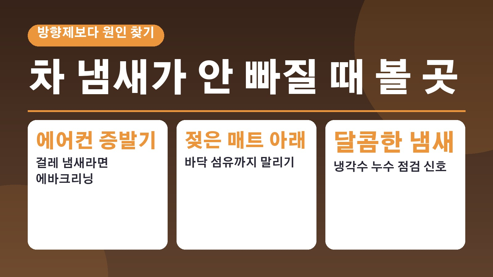
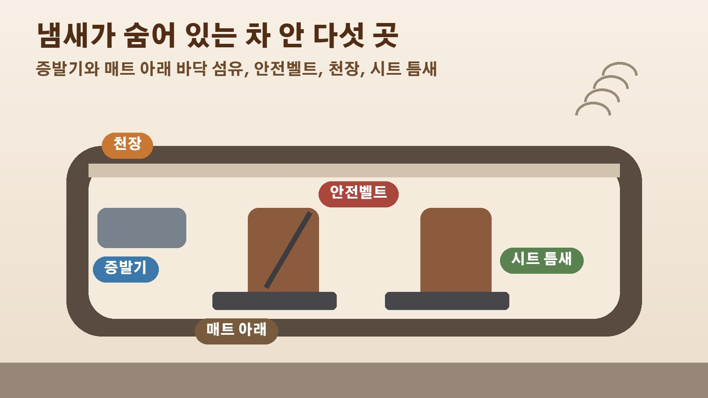

방향제를 뿌려도 차 냄새가 안 빠진다면, 실내세차 전에 먼저 볼 곳 다섯 군데

차 문을 열자마자 퀴퀴한 냄새가 훅 올라오면 일단 방향제부터 찾게 되죠. 그런데 뿌리고 나면 인공 향과 원래 냄새가 섞여서 오히려 더 거북해지는 경험, 한 번쯤 있으실 거예요. 10월 17일 위키트리가 차 안 악취의 원인을 냄새 종류별로 짚은 기사를 냈는데요. 에어컨 필터를 갈았는데도 냄새가 계속된다면 숨은 오염 구역이나 부품 이상 신호일 수 있다고 합니다. 실내세차를 맡기기 전에 확인해 볼 곳을 순서대로 정리해 봤습니다.
걸레 썩은 냄새라면 에어컨 증발기부터
에어컨을 켰을 때 발을 안 씻은 듯한 냄새나 걸레 썩은 냄새가 나면 증발기를 먼저 의심하라고 기사는 설명합니다. 증발기는 에어컨이 찬 바람을 만드는 냉각 장치라 바깥과 온도 차이 때문에 표면에 늘 물기가 맺히는데요, 시동을 끄기 전에 이 물기를 말리지 않으면 곰팡이와 세균이 자라 냄새가 납니다. 이렇게 곰팡이가 증발기에 자리 잡으면 필터만 바꿔서는 냄새가 잡히지 않아요. 이럴 땐 전문 업체에서 폼 세정제와 내시경 카메라로 증발기를 직접 씻어 내는 에바크리닝이 가장 확실하다고 합니다. 평소에는 목적지 도착 5분 전에 에어컨 버튼을 끄고 송풍으로 바꿔 습기를 말려 주는 습관이 좋고, 시동이 꺼진 뒤 팬을 돌려 말리는 애프터 블로우를 다는 방법도 있습니다.
젖은 매트 밑 바닥 섬유까지 확인
바닥 매트는 신발 밑창의 흙과 빗물, 과자 부스러기가 가장 많이 쌓이는 곳입니다. 비나 눈 오는 날 젖은 신발로 타면 매트가 물을 먹고, 그대로 두면 매트 아래 바닥 섬유까지 물이 스며들어요. 표면만 털어서는 그 아래 갇힌 습기 냄새가 차 안 전체로 퍼진다고 합니다. 직물 매트는 햇볕 잘 드는 곳에서 하루 이상 완전히 말리고, 고무나 코일 매트라도 들어내서 차체 바닥 섬유를 살펴봐야 해요. 바닥에 베이킹소다를 얇게 뿌리고 30분 뒤 청소기로 빨아들이면 습기와 냄새를 함께 잡을 수 있고, 오염이 심하면 석션 장비가 있는 출장 실내세차로 바닥을 빨아내야 한다고 기사는 설명합니다.
안전벨트와 천장, 의외의 냄새 저장고
쉽게 놓치는 곳이 안전벨트와 천장입니다. 안전벨트에는 땀과 화장품, 피부 유분이 그대로 스며들고 오래 두면 시큼하고 끈적한 냄새가 나요. 천장 재질도 담배 연기나 바깥 먼지를 잘 빨아들입니다. 안전벨트는 끝까지 뽑아 집게로 고정한 뒤 따뜻한 물에 중성세제를 푼 타월로 꼼꼼히 닦고 그늘에서 완전히 말려 다시 넣으면 됩니다. 천장은 다목적 세정제를 묻힌 타월로 가볍게 닦되, 물기를 너무 많이 쓰면 안쪽 접착제가 떨어져 천장이 주저앉을 수 있으니 살짝 쓸어내리듯 닦으라고 합니다. 문 아래쪽 도어 포켓과 컵홀더 바닥, 가죽 시트 틈새와 통풍시트 구멍 속 음식 부스러기도 냄새의 원인이 되니 주기적으로 빼내 주는 게 좋습니다.

시큼하거나 달콤하거나 탄 냄새는 정비소로
냄새 종류에 따라 청소가 아니라 정비가 필요한 경우도 있습니다. 에어컨을 켰을 때 식초 같은 시큼한 냄새가 나면 에어컨 물이 빠지는 드레인 호스가 먼지로 막혀 물이 거꾸로 들어오는 것일 수 있어 호스 입구 이물질을 확인해야 해요. 달콤한 냄새는 엔진 냉각수가 새고 있을 확률이 높은데, 앞유리 안쪽에 기름진 김까지 서린다면 바로 정비소에서 냉각수 누수를 점검받아야 합니다. 고무 탄 냄새나 계란 썩는 냄새는 실내 오염이 아니라 부품의 위험 신호로, 팬 벨트 마모나 브레이크 패드 과열, 엔진오일 누유, 촉매 장치 이상 등을 의심할 수 있다고 합니다. 이런 냄새는 방향제나 청소로는 해결되지 않습니다.
방향제는 덮는 용도가 아니다
기사는 냄새를 덮으려고 강한 방향제를 많이 쓰는 건 좋지 않다고 지적합니다. 오염원을 그대로 둔 채 방향제 향이 곰팡이나 배기가스 냄새와 섞이면 더 거북한 냄새가 되고, 방향제 성분이 에어컨 안에 찌꺼기로 남아 곰팡이의 먹이가 되기도 한다는 거예요. 탈취 스프레이를 썼다면 모든 문을 열고 15분 이상 충분히 환기해야 남은 성분이 호흡기를 자극하지 않는다고 합니다. 결국 냄새가 어디서 오는지 먼저 찾고, 그다음에 실내세차나 정비를 고르는 순서가 맞는 셈입니다.
참고한 기사: 위키트리 방향제 뿌려도 차 냄새 이곳부터 확인 2026년 10월 17일
태그
차냄새제거 실내세차 에바크리닝 차량에어컨냄새 출장실내세차 차량매트청소 안전벨트세척 차량방향제 차량관리 세차팁